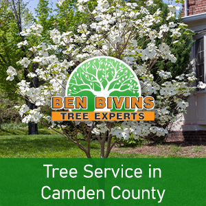

In Camden County, New Jersey, tree services play a pivotal role in enhancing the environment and ensuring the well-being of residential properties. Trees don’t only elevate the aesthetic appeal of a neighborhood but also contribute significantly to the ecological balance. They offer shade, improve air quality, and support wildlife. However, the benefits of trees can only be fully realized through proper care and maintenance. Camden County tree service experts like Ben Bivins Tree Experts provide a range of services including pruning, trimming, removal, and health assessments to ensure trees remain a valuable asset rather than a liability.The Benefit of Trees for Residential Properties
Trees offer a myriad of benefits to residential properties. Aesthetically, they add beauty and character, creating a serene and inviting outdoor space. Furthermore, they improve property value. Well-landscaped homes with mature trees are often appraised at higher values than those without. The shade provided by healthy trees is cooling, which reduces the reliance on air conditioning during hot months. Additionally, they protect the property from the harsh effects of the sun, prolonging the life of building materials. Trees act as natural sound barriers, reducing noise pollution and creating a peaceful environment. They also improve air quality by filtering pollutants, offering a healthier living space. Beyond the financial and aesthetic appeal, trees provide a habitat for wildlife, contributing to local biodiversity and offering the joy of nature right at one’s doorstep.
Hire Only Licensed and Insured Camden County Tree Companies
Professional, licensed, and insured tree services are critical for residential properties to ensure the safety, health, and aesthetic appeal of both the property and its surrounding environment.
- Licensing demonstrates that the service provider meets specific industry standards and has the expertise to perform tree care tasks effectively and safely.
- Insurance is equally important, as it protects homeowners from liability in case of accidents or damage to the property during the tree service operations.
- Professional tree care companies are equipped with the necessary tools, knowledge, and experience to diagnose and treat tree health issues, perform maintenance tasks like pruning and trimming correctly, and safely remove trees when necessary.
- Experienced tree care professionals also offer valuable advice on the care and maintenance of trees, helping homeowners to preserve their landscapes’ beauty, health, and safety.
In essence, hiring professional, licensed, and insured tree services is a crucial investment in the longevity and well-being of a residential property’s natural environment.
Tree Services for Residential and Commercial Properties Available
Ben Bivins Tree Experts offer a comprehensive suite of Camden County tree services designed to meet the diverse needs of residential and commercial properties alike. These services typically include:
- Tree trimming and pruning, which help maintain the health and aesthetics of trees, ensuring they grow properly and safely.
- Tree removal, which is a last resort, but often necessary when trees become hazardous, die, or interfere with infrastructure.
- Stump grinding follows removal, eliminating the remnants of cut-down trees to prevent trip hazards and pest infestation.
- Emergency tree services, responding swiftly to remove or secure trees damaged by storms or other unforeseen events.
Contact Ben Bivins Tree Experts for Tree Service in Camden County
The professional level of tree service in Camden County offered by Ben Bivins Tree Experts in local communities plays a pivotal role in enhancing the safety, health, and aesthetic appeal of residential and commercial properties. From essential maintenance tasks like trimming and pruning to more complex procedures such as tree removal and stump grinding, these services ensure that trees remain a valuable asset rather than a liability. By investing in professional tree services, property owners not only contribute to the well-being of their immediate environment but also to the broader ecological and community health. Contact us today for all your tree service needs.